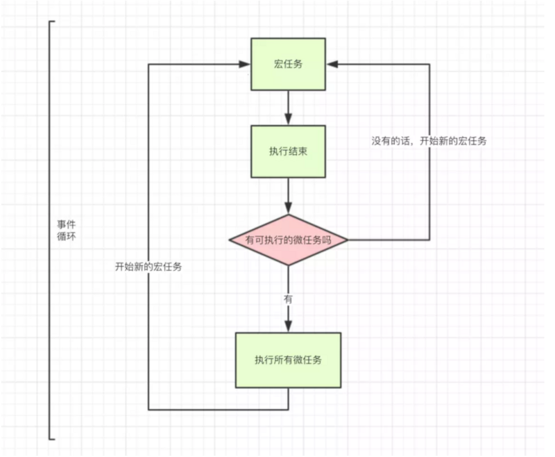

<!DOCTYPE html>
<html>
	<head>
		<meta charset="utf-8">
		<title></title>
	</head>
	<body>
		<!--
			https://segmentfault.com/a/1190000012806637#1
		-->
		<!--
			1 js为什么是单线程
			因为js最初是被设计用于浏览器的，假如js是多线程的，现在我们使用js去操作一个dom
			假如两个线程 一个线程删除的dom 一个线程编辑了dom，这样浏览器就无法执行这两个矛盾的线程了
			2 js为什么需要异步
			如果js不存在异步，只能从上向下执行，如果上一段代码解析时间很长，那么下面的代码就会被阻塞。
			3 js是单线程，那么他在一条线程上执行又是如何实现的异步呢？
			通过事件循环eventloop
		-->
		<!--
			什么是eventloop
			
			事件循环将js代码任务分为了宏任务和微任务
			宏任务:包括整体代码script、setTimeout、setInterval
			微任务:Promise（.then.catch才是微任务 new Promise是宏任务会直接执行）、process.nextTick
			
			如何执行
			规则1
			执行一个宏任务,过程中如果遇到微任务,就将其放到微任务的【事件队列】里
			当前宏任务执行完成后,会查看微任务的【事件队列】,并将里面全部的微任务依次执行完
			规则2
			首先判断JS是同步还是异步,同步就进入主线程,异步就进入event table
			异步任务在event table中注册函数,当满足触发条件后,被推入event queue
			同步任务进入主线程后一直执行,直到主线程空闲时,才会去event queue中查看是否有可执行的异步任务,如果有就推入主线程中
			
			规则1中每一步按规则2走
			
		-->
		<!--
			setTimeout如何执行
			setTimeout(function(){
				console.log('执行了')
			},3000)   
			3秒后setTimeout里的函数会被推入event queue，而event queue(事件队列)里的任务，只有在主线程空闲时才会执行
			如果主线程执行了十秒，那么这个函数也只能10秒后执行
		-->
		
		
	</body>
</html>
